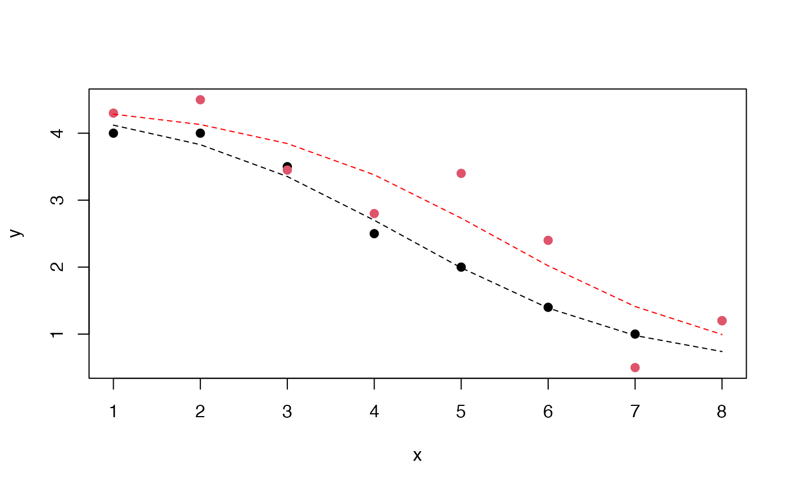

S5b: hypothesis testing in nonlinear regression
Vincent J. Carey, stvjc at channing.harvard.edu
July 11, 2023
Source:vignettes/S5b_nonlin.Rmd
S5b_nonlin.RmdLogistic curve with response decreasing in x
Let a denote the asymptotic response at large values of x and b denote the response at x=0. c will denote a slope-like parameter, and d the midpoint of transition between asymptotes.
a = 4
b = 1
c = 0.8
d = 4.5
x = 0:10
y = a + (b-a)/(1+exp(-c*(x-d)))
plot(x,y,type="b", ylim=c(0,5))A variety of S-shaped curves can be produced depending on choices of the parameters.
Exercise: Increase the value of the parameter c, recompute y, and overlay on the plot with lines() and lty=2.
Fitting the model to data
The nls function can fit this model. We have some data that were crafted to illustrate a “pair” of curves that can be regarded as shifted instances of common shape. Here the color distinguishes the elements of the pair.
We are modeling a pair of experiments in which the red points arise from a different condition than the black points. The null hypothesis that the curves are identical is tested using a parameter ‘del’ measuring the shift in the response curve. An indicator variable z takes value 0 for control condition and 1 for the active treatment.
nl1 <- nls(y ~
a + ((b - a)/(1 + exp(-c * (x - d*(1+del*z))))),
start = list(a = min(y), b = max(y), c = 1,
d = round(median(x)), del=0), data=nonlindat)
summary(nl1)##
## Formula: y ~ a + ((b - a)/(1 + exp(-c * (x - d * (1 + del * z)))))
##
## Parameters:
## Estimate Std. Error t value Pr(>|t|)
## a 4.4419 0.6008 7.393 1.37e-05 ***
## b 0.4829 0.9835 0.491 0.633037
## c 0.7281 0.4401 1.654 0.126290
## d 4.3314 0.7326 5.912 0.000101 ***
## del 0.2412 0.1244 1.939 0.078521 .
## ---
## Signif. codes: 0 '***' 0.001 '**' 0.01 '*' 0.05 '.' 0.1 ' ' 1
##
## Residual standard error: 0.4515 on 11 degrees of freedom
##
## Number of iterations to convergence: 14
## Achieved convergence tolerance: 4.653e-06Let’s use the model to overlay predicted response curves on the original data.
plot(y~x,data=nonlindat, col=nonlindat$z+1, pch=19)
nd = data.frame(x=1:8,z=0)
y1 = predict(nl1, newdata=nd)
lines(1:8, y1, lty=2)
nd2 = data.frame(x=1:8,z=1)
y2 = predict(nl1, newdata=nd2)
lines(1:8, y2, lty=2, col="red")
In summary, there is some evidence of a shift, location of inflection point shifted by about 0.24 in units of x, with a p-value of about 0.079. It seems clear that the model fits one condition much better than the other.
Exercise: The abline function can be used to sketch aspects of the model over the plot just given. For example, abline(h=4.4419, lty=2) draws a dashed line representing the fitted upper asymptote. Use the estimated a, b, d parameters to draw “cross-hairs” showing the location of the inflection point for the black curve, by filling in the appropriate values of abline(v=?, h=?).
Exercise (advanced): Test the hypothesis that the two conditions have different asymptotic values as x increases.